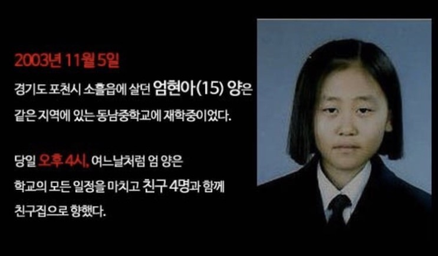

중학교 2학년 엄현아 양이 엄마에게 "곧 간다"는 말을 남긴 후 살해된 채 발견된 사건으로,
실종된 지 3개월 후 자택에서 6km 떨어진 배수로에서 발견됐다.
발견 당시 엄 양은 알몸 상태였으며 손톱과 발톱에 붉은색 매니큐어가 칠해져 있었다.
후에 알려진 바로는 엄 양의 상반신은 부패가 심한 반면 하반신은 깨끗했고
정액 검사에서 음성 반응을 보였다. 즉 성폭행 가능성은 낮다는 것.
또 손톱과 발톱의 매니큐어는 사후에 칠해진 것으로, 범인은 성도착증 환자일 가능성이 높다는 분석도 있다.
지난 3월 방영된 SBS <그것이 알고 싶다>에서 목격자가 등장하기도 했다. 목격자는
한 낯선 흰색 차량이 다가와 동승을 권유해 탑승했으나 목적지에 다다라도 내려주지 않아
달리는 차에서 가까스로 탈출했으며, 운전자는 인근 중학교 방향으로 유턴해 사라졌다고 증언했다.
또 목격자는 최면 요법을 통해 차량 뒤쪽에 가죽 가방과 카키색 점퍼가 있었으며,
운전자의 손톱에 투명 매니큐어가 칠해져 있었다고 증언했다.
또 피부가 화장한 듯 밝았으며 가느다란 손가락에 호리호리한 체형인 것을 기억해냈다.
